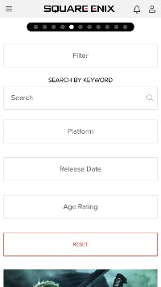

Repetition
Dropbox
https://www.dropbox.com/This homepage exemplifies the principle of repetition in several ways. There is consistency with the left-alignment used on the texts. Another repetitive element includes the same typeface used throughout the page. Lastly, the colors of yellow and white are consistently applied to help viewers identiy its visual hierarchy.
White Space and Clean Design
Uber
https://brand.uber.com/This page from Uber clearly showcases sufficient white space which makes it a good example of clean design. The spacing between each object helps emphasize a clear and direct message to its users and visitors. Its minimalist design is effective in communicating the purpose behind the phrase, "Less is more."
Hick's Law
Square Enix
https://square-enix-games.com/en_US/games The principle of Hick's Law is shown and reflected on this page. Square Enix is a video game company in Japan, so the filter menu is highly beneficial for users as they sort through hundreds of games. This is a prime example of Hick's Law since it helps users navigate through various options that they're familiar with to order a very specific game.